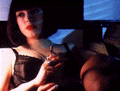
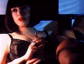

There is just no place for us in this world ...
| Année | 1994 |
| Pays | France / USA |
| Réalisation | Gregg ARAKI |
| Acteurs(trices) | James DUVAL (Xavier), Rose MacGOWAN (), Johnathon SCHAECH () |
| Scénario | Gregg ARAKI |
| Montage | Gregg ARAKI |
| Photo | Jim FEALY |
| Musique | Curve, Love & rockets, Cocteau twins, The wolfgang press, Meat beat manifesto, The verve, The jesus and mary chain, Mc 900 ft jesus, Lush, Babyland, Medicine, Pizzicalo five, Extra fancy, Slowdive |
| Production | UGC et The Teen Angst Movie Company |
| Distribution | Haut et court |
| Durée | 84 minutes |